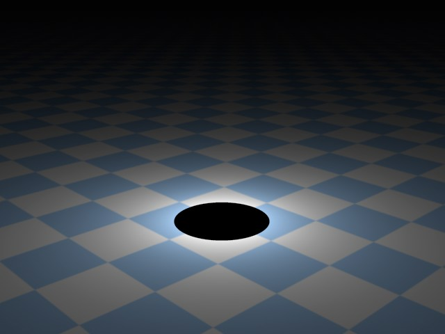
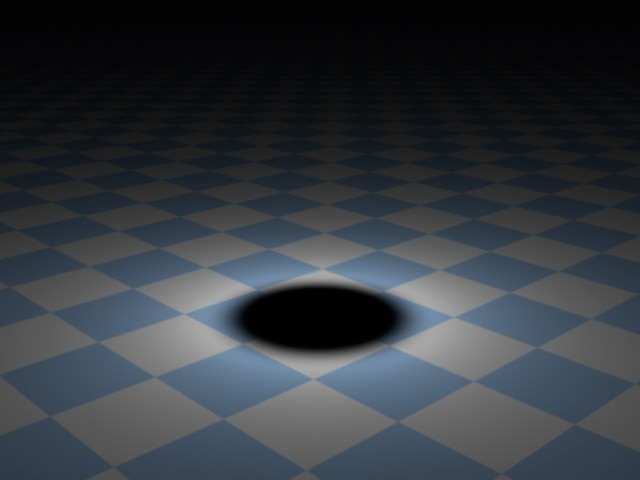
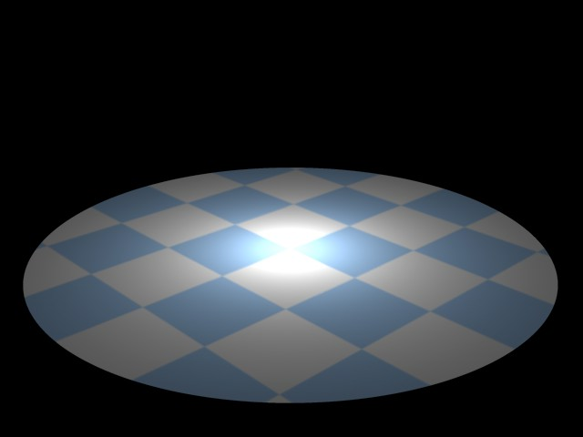
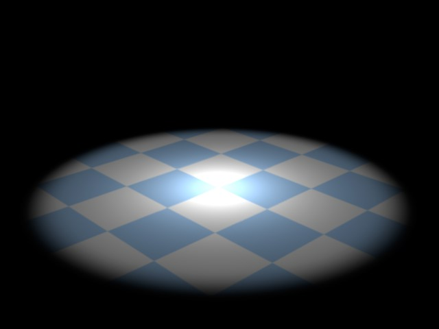

Details
Using the Details tab, you can access the individual properties of each of your light sources.
This option lets you enable a brightness falloff at a light’s edge (see Inner Angle / Inner Radius).
Inner Angle [0..175°]
Inner Radius [0..+∞m]
Depending on the type of light you use, this will adjust either the Inner Angle (for a standard Spotlight) or the Inner Radius (for a Parallel Spotlight) of the light.
Within the Inner Angle area, the luminosity value of the light source is 100%. From the Inner to the Outer Angle the luminosity value falls from 100% to 0%.
If Use Inner is disabled, the luminosity of the light source in the entire light cone amounts to 100%, resulting in a hard cone of light. If the Inner Angle has a value of 0, the light source will have a soft transition spreading from the center of the light to the light’s edge.
Outer Angle [0..175°]
Outer Radius [0..+∞m]
Adjusting this value will define how large the light will be in total. The Outer Angle value indicates the limits of the light source’s luminosity.
Enables you to stretch and shear the shape of the light’s cone. The standard aspect ratio value is 1. For example, increasing the value to 2 will double the light cone’s height relative to its width. Similarly, decreasing the value to 0.5 will make the light cone only half as high as it is wide.
The intensity of a light source on an object is not dependent on the distance of the light from the object (unless you explicitly adjust its falloff), but rather on the angle at which its rays hit the object. If a ray hits a surface at an angle of 90°, the surface is illuminated with the light’s maximum intensity (taking any falloff into account). As this angle (called the angle of incidence) decreases, the strength of the illumination decreases as well. Therefore, in an average scene, a soft transition is normally seen on any lit surfaces. The Contrast value controls this transition.
In the image below, a series of pictures of a planet is shown, towards which a light is directed. You can clearly see how little the planet’s front and sides are lit using 0% contrast. The transition on this lit surface is soft; this surface contrast is not natural for planets. If you look at photographs of a planet you will see that the transition of its lit surface to its shadowed edge is hard — as illustrated further to the right in the series of pictures.
 Figure 1: 0% / 50% / 100%
Figure 1: 0% / 50% / 100%With the contrast control you can adjust how soft or hard you wish the lit surface transition to be.
If you need a special over-soft look to your objects you may even enter negative values, as illustrated in Figure 2.
Surely you have experience the problem of having a perfectly lit scene in which the shadows that are cast don’t really fit in the scene visually. This is why we added Shadow Caster. You can use the Shadow Caster option to cast shadows without adding illumination to the scene.
If you enter a negative Intensity value (General tab), the shadows will cast light instead of shadows. Even if we don’t have an example of a practical use for this function, surely someone reading this addendum right now is ecstatic about this feature …
Example:
On the left the scene has been lit optimally using three light sources. The cast shadows, though, detract from the scene’s harmonious look. On the right, an additional Shadow Caster light source was placed directly above the sphere that casts a correct shadow. The shadows of the other three light sources were manually deactivated.
The scene’s lighting remains unchanged, except for the shadows.
The Area light, including Area shadows, have been reworked from the ground up:
- Each light source can be given any shape
- Area lights can made visible when rendering
- Area shadows are rendered in accordance with an Area lights
What are Area lights actually good for?
Area lights offer very realistic lighting and, when used in conjunction with Area shadows, very realistic shadows (also results in longer render times).
When using three-dimensional Area lights (cubes, spheres, etc.), don’t forget that objects within the light source’s volume require higher sampling rates, especially when using Area shadows. The reason being, that light and shadow fall on the object from all directions.
You can define sampling rates for light and shadow here:
- Diffuse lighting: Samples in the Details tab
- Area shadow: Accuracy, Minimum Samples and Maximum Samples in the Shadow tab.
Two-dimensional light sources render faster than three-dimensional light sources. Area shadows in particular can reach GI-level render times!
The object will then automatically be made invisible when the scene is rendered.
Unexpected or false results can occur if a Soft (Shadow Maps (Soft)) or Hard (Raytraced (Hard)) shadow is used in conjunction with an Area light.
Area lights cannot emit a visible or volumetric light, with one exception - the Line area shape.
The following settings will be made available for an Area light, for the creation of shadows (in the Details tab when Area is activated in the General tab’s Shadow menu):
- Area Shape
- Object
- Size X, Y, and Z A virtual area source strictly for the generation of the Area shadow will be assumed.
A light source in the shape of a disc can, for example, be used when simulating the light emitted by a desk lamp or any other circular light source.
This setting can be used when simulating interior light, e.g., light shining through a rectangular window.
The spherical light source has a similar effect as Disc, only the light is dispersed better in all directions.
Using this function you can define lights in any from, a polygon object (objects must be converted via Mesh / Conversion / Make Editable) to any spline (if the Spline has multiple segments, only the first will be used) as a light source. Simply drag the object or spline onto the light’s Object text field.
A straight, linear light source (previously Tube), good for use in simulating neon tubes. This is the only Area light source that can render as visible or volumetric.
Cylinder
Cylinder (Perpendicular)
The Cylinder light is similar to the Line light. Any diameter can be set.
Hemisphere is good for use in simulating outdoor lighting since its light is emitted in all directions, as the sky does in reality.
If Object / Spline is selected in Area Shape, you can use any (polygonal) object or spline for the shape of your light. Simply drag the shape into the light’s Object text field.
If an object is used that was deformed using a deformations object, the shape of the object prior to its deformation will be used. Applying the Current State to Object will create a deformed polygon object that can be used.
Size X [0..+∞m]
Size Y [0..+∞m]
Size Z [0..+∞m]
Here you can define the size of the Area light in 2D or 3D.
This setting lets you regulate the light emitted by a Disc or Rectangle area light. With a maximum value of 180°, the light will emit around the Area light as it would from a hemispherical shape. The smaller the value, the more light will be removed from the edges. A value of 0° represents the behavior in Cinema 4D versions prior to R9.5.
It can occur that an Area light’s sample structure becomes visible (e.g., when using specular light, as in the example above). It will look like the surface is being lit by several light sources. If this happens, raise the value.
You should also raise the value if the light dispersion is uneven (also when the Add Grain (Slow) option has been activated). This uneven dispersion of light takes place in particular with Area lights that clip objects and use functions such as Inverse or Inverse Square.
This setting is only available for an Infinite Light with an Area shadow.
This setting lets you vary the angle of the shadow, beginning at the origin of the object casting the shadow. A value of 0° will result in a hard shadow.
This is another way in which to avoid the artefacting mentioned in Samples above. A grainy rendering will be used to eliminate any visible light source structures. The Samples value should be high enough to avoid an extremely grainy look. On the other hand, such a grainy look could be just what you want …
The render times will be quite a bit longer compared to normal (with Add Grain (Slow) deactivated) rendering.
Activate this option if you want to render the Area light source itself. Depending on brightness, the light source will, in most cases, be rendered white.
Area lights with no actual area (surface), such as Line or splines, cannot be rendered.
RELEASE 16
Use this option to define if the Area light should be rendered as a specular highlight (simplified compared to real reflections) in a reflective material. This option and the following option can be used to define if the light should be rendered as a specular highlight, as a reflection or both (this can also be defined for a material individually in its Reflectance channel’s layers.)
Note that the Specular option principally does the same for the entire light source (regardless of which Type is selected), whereas the option described here only applies to the Area light.
Activate this option if you want to mirror an Area light in another object. Area lights with no actual area (surface), such as Line or splines, cannot be rendered.
Visibility Multiplier [0..10000000%]
Use this setting to adjust the brightness of a visible Area light or its reflection in another object. This option will only be available if Show in Render or Show in Reflection is active
A normal virtual light source will illuminate its surrounding environment with a continuous, linear brightness. However, this is not how all lights work in reality; real light sources will have their luminosity absorbed. Just as in nature, Cinema 4D light sources are able to have their luminosity reduced over any distance. To achieve this, several falloff functions are available from this drop-down list, illustrated below.
Their main characteristic is the nearly unlimited brightness at their point of origin, which, for example, is very good for use in simulating a light bulb very near to a wall, at which point the wall will be rendered very brightly, or over-lit.
In the examples below, you can see the different types of falloff, in this case in conjunction with an Area light. The small function graphs show the light’s intensity in relation to the distance from the light source. Kinks in the graph represent Radius / Decay.
Within the Inner Radius there is no falloff. Up to this point, the brightness of the light remains constant. Outside of this boundary is where the Inner Radius falloff begins.
- Falloff Linear and Step: The range between the Inner Radius and the Radius/Decay is where the brightness of the source light changes from 100% to 0%. This Radius/Decay value indicates the maximum range that will be illuminated by the source light.
- Falloff Inverse Square and Inverse Clamped: the Intensity defined in the General tab will be reached at (or up to) this distance from the light’s origin. Hereafter the Intensity will deminish proportionally opposite to the square of the original distance.
This option is only available in conjunction with Spot lights and is only useful when the Use Gradient is enabled and with the gradient Color, which itself must have handles of a different color. Normally the color gradient will extend the light’s color along the Spot light source’s Z axis from the gradient begin to the gradient’s end. If the Radial Falloff option is enabled the light color will also be colored radially from the center of the angle/radius outward.
If this option is active, light will only be emitted in the light’s positive Z-direction. Light that is emitted in the opposing direction will be clipped on the X-Y plane.
This option makes it possible to define several colors over the course of a gradient’s falloff. When active, this gradient overwrites the color defined in the General tab.
Clipping
Enable Near Clip to restrict the illumination and visible light (if present) radially with an Omni light and linearly with all other light types. The light source does not have to radiate light from its origin; the radiation may begin, for example, five meters from the light’s origin.
Near Clip
From [0..+∞m]
To [0..+∞m]
The two values used for this effect are From and To and signify the distance for the clipping effect. The larger the difference in the two values, the softer the transition.
From = 90, To = 90. | From = 90, To = 150. |
Far Clip
From [0..+∞m]
To [0..+∞m]
Enable Far Clip to cut off the light source’s illumination abruptly. To use Far Clip, once again two values are needed. This time the From and To values denote where the cut off begins, and where the light source will fully vanish. Again, the larger the difference between these two values, the softer the transition.
From = 300, To = 300. |
From = 220, To = 300. |